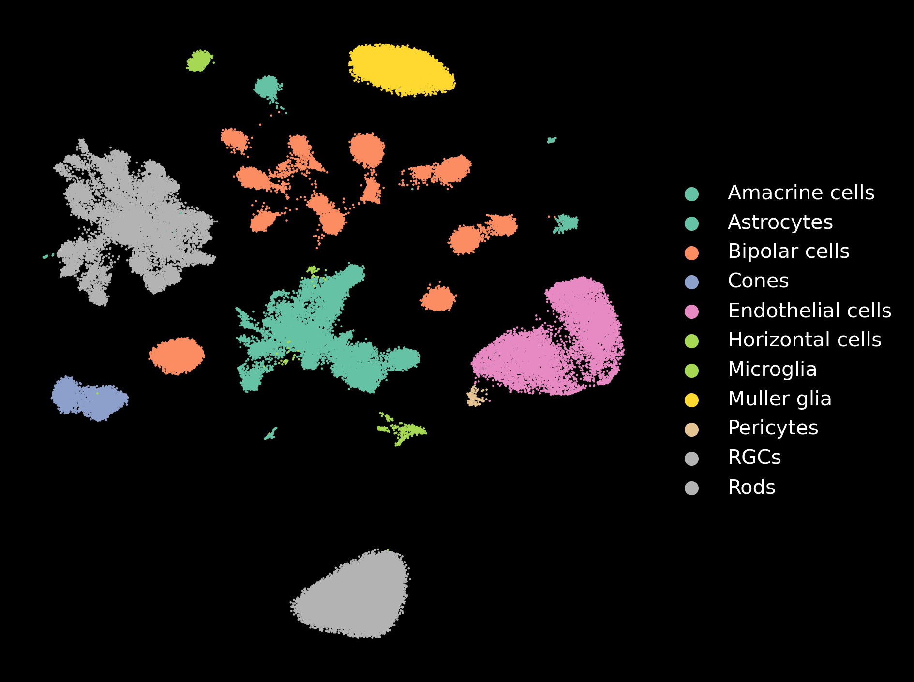
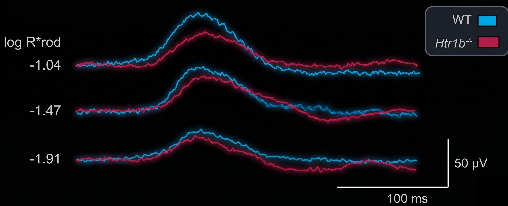

Neurovascular Unit Dysfunction
We have discovered that retinal capillary plexi and various neuronal cell types show differential susceptibility to IOP elevation. This project investigates the underlying mechanisms of these relationships to identify ways to modify disease outcomes.

RGC Survival & Neurite Recovery
Using a novel immunopanning and FACS-based system, we isolate retinal ganglion cells with exceptional fidelity. We study the intrinsic mechanisms governing the wide range of survival and neurite extension phenotypes observed in culture.

Time-Dependent Transcriptomics
By performing scRNA-seq and spatial transcriptomics on retinal ganglion cells following elevated IOP, we map the transcriptomic landscape of early disease. Our goal is to identify subtype-specific targets that modulate the onset and severity of glaucoma.

Mechanisms of Neuroprotection
We are exploring neuroprotection through two lenses: the unstudied role of serotonin signaling in the retina and the molecular mechanisms of brimonidine. Both pathways offer potential insights into preserving retinal ganglion cell health during glaucomatous injury.
